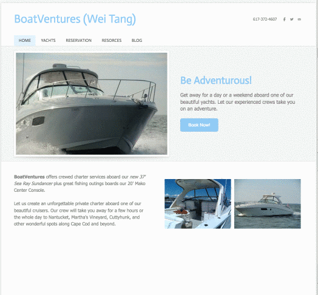

My Portfolio
Headline analysis using TextBlob and NLTK
Python&&pandas&&NLTK An exploration 10,000 news articles collected between November 2016 and May 2017 from the top-500 news publishers.

AN IDENTITY BEYOND HE OR SHE
html&&css&&javascript&&D3.js&&CartoDB The fight over pronouns is only part of the struggle for non-binary transgender people.

Mapping the Post-recession Boomtown of Boston
Access& Carto DB With a growing economy and population in the Greater Boston area, developers have been planning to construct more residential and commercial buildings every year.

Mapping Boston’s worst towing spots
Javascript& Leaflet.js Towing companies aggressively patrol certain locations in Boston, with little government oversight. A look at where, why and when more than 8211 vehicles were towed between June 2015 and November 2017.

Who is the average gamer?: A look at the demographics of computer and video gaming
SQL && Tableau Everyone knows someone who is a gamer, it seems — there are still a lot of misconceptions about the people who play computer and video games.

EXPLORATORY DATA ANALYSIS – DIAMONDS
R && ggplot In this article, I investigate the price of diamonds using box plots, numerical summaries, and one of the following categorical variables: cut, clarity, and color.

Do schools directly affect home values in a neighborhood?
Python& Carto DB This animated map shows the relationship between housing price and the quality of education. Do schools directly affect home values in a neighborhood?

Gapminder Dataset Analysis
R && ggplot The relationship between sugar consumption in the U.S. VS Blood Pressure
Web Development

A website of displaying my sfavorite movies
html& css & Jquery & Python This website lists all of my favorite movies. The trailer will pop out when you click the posters.It made with Python and Javascript.

Blog Website
JavaScript&& angular.js && node.js This is an User-Friendly & Designed blog website for Non-Technical Users.

>Movie Search Website
JavaScript&& angular.js && node.js Let's start to search movie by typing keyword. And the page will render the top 10 related movie back.

Education Portal
JavaScript&& angular.js && node.js This is an User-Friendly & Designed education portal website for Non-Technical Users.

Boat Ventures Website
JavaScript Worked as a web designer to help the firm to build an interactive website for BoatVentures that meets the owner's needs.